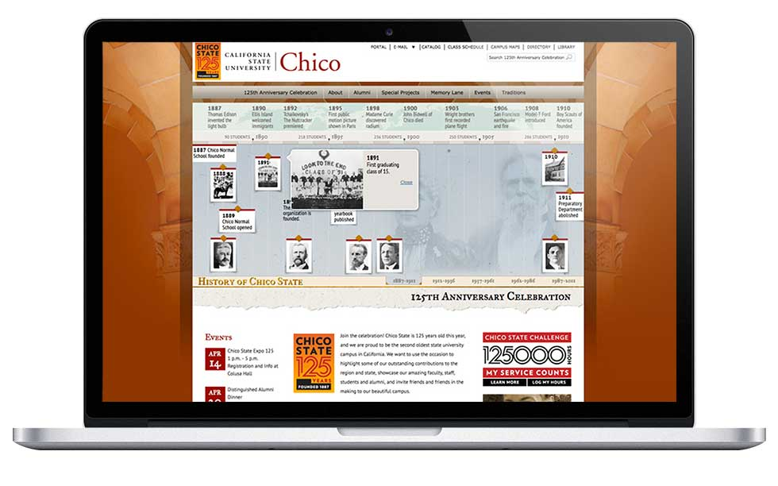
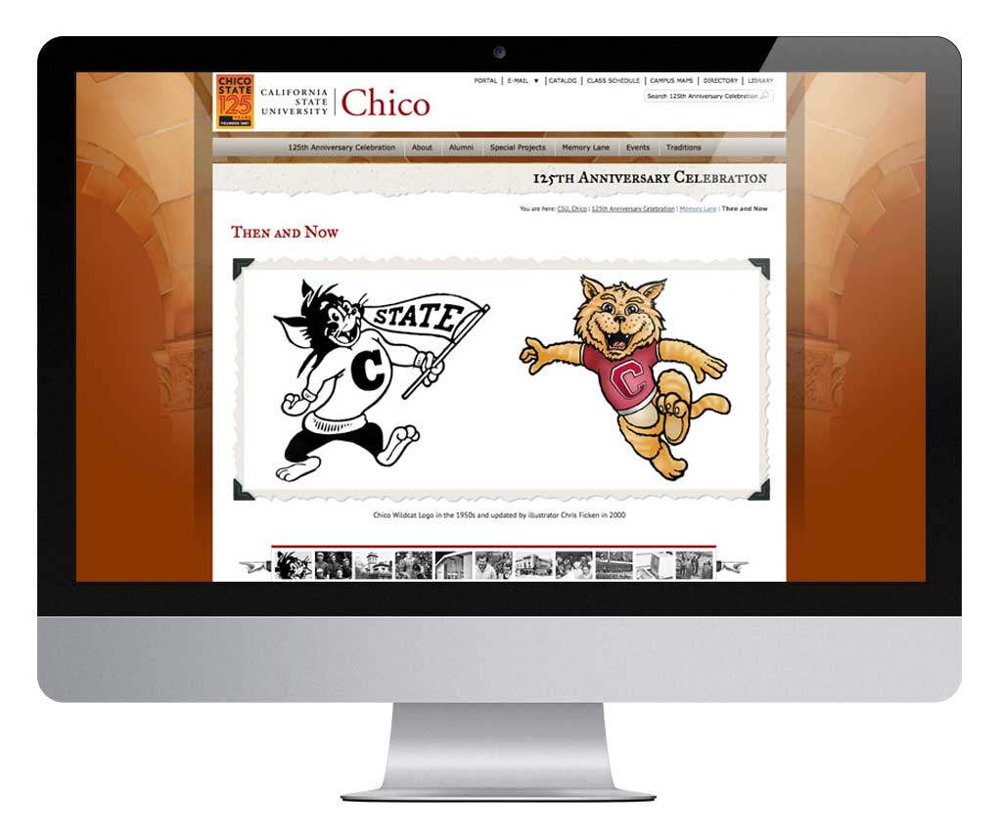
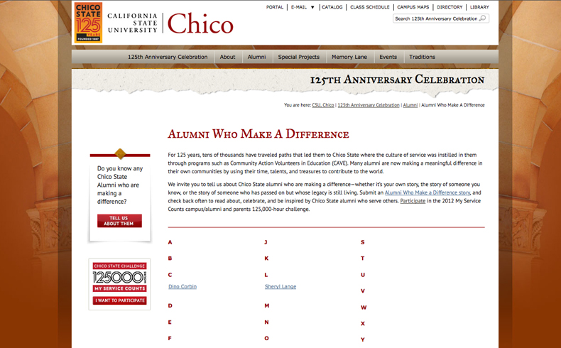
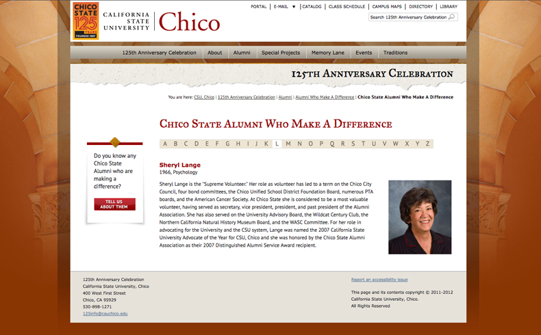
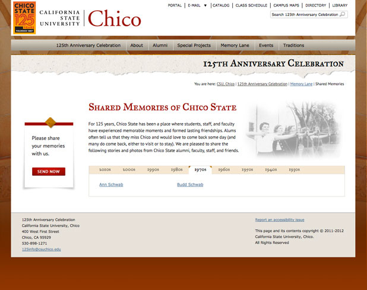
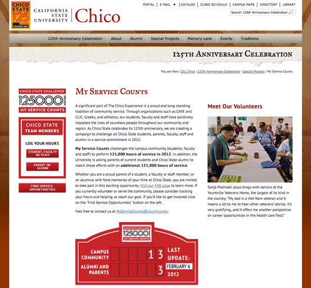

{125th Anniversary: Development, Information Architecture, Interaction;}
When California State University, Chico was gearing up for their 125th Anniversary, I did the development and information organization work behind the interactive, feature-rich website.
The site is built within the Hannon Hill Cascade Server CMS, using a combination of jQuery, XSLT, and of course HTML/CSS
 The site's features are largely encouraging visitors to contribute stories and be involved with other on-campus activities. Many areas have forms that write to indexed pages after moderator approval.
 